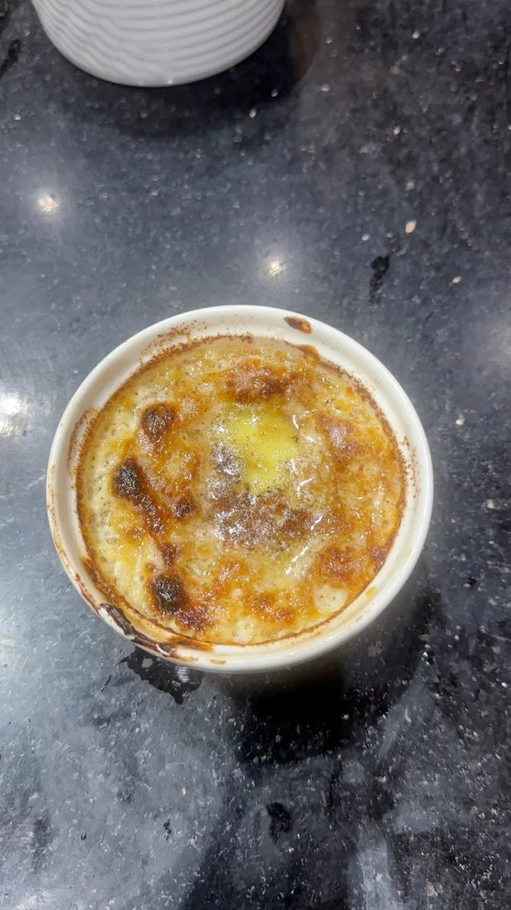
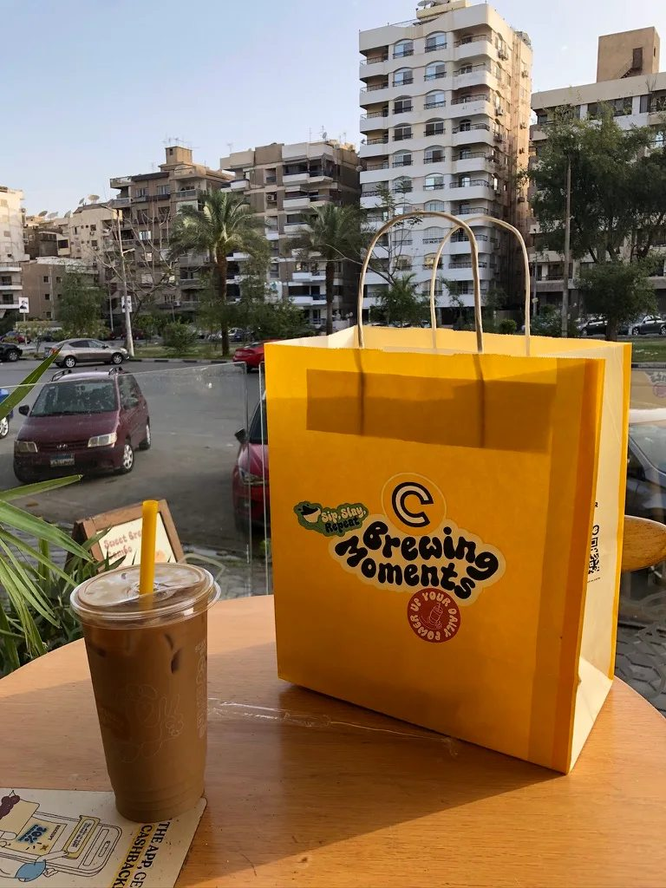
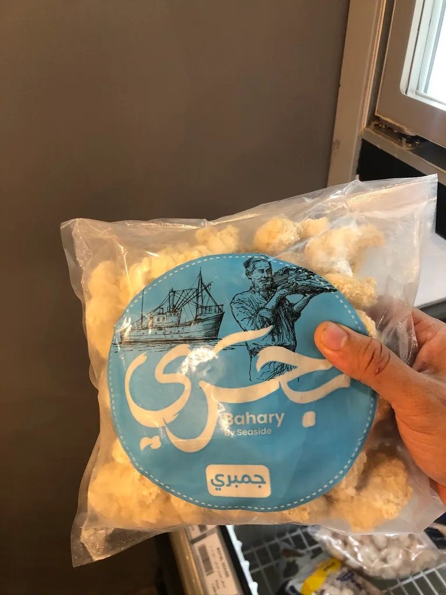
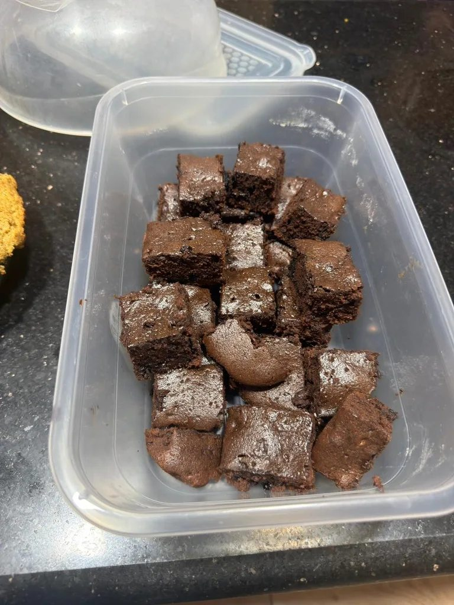
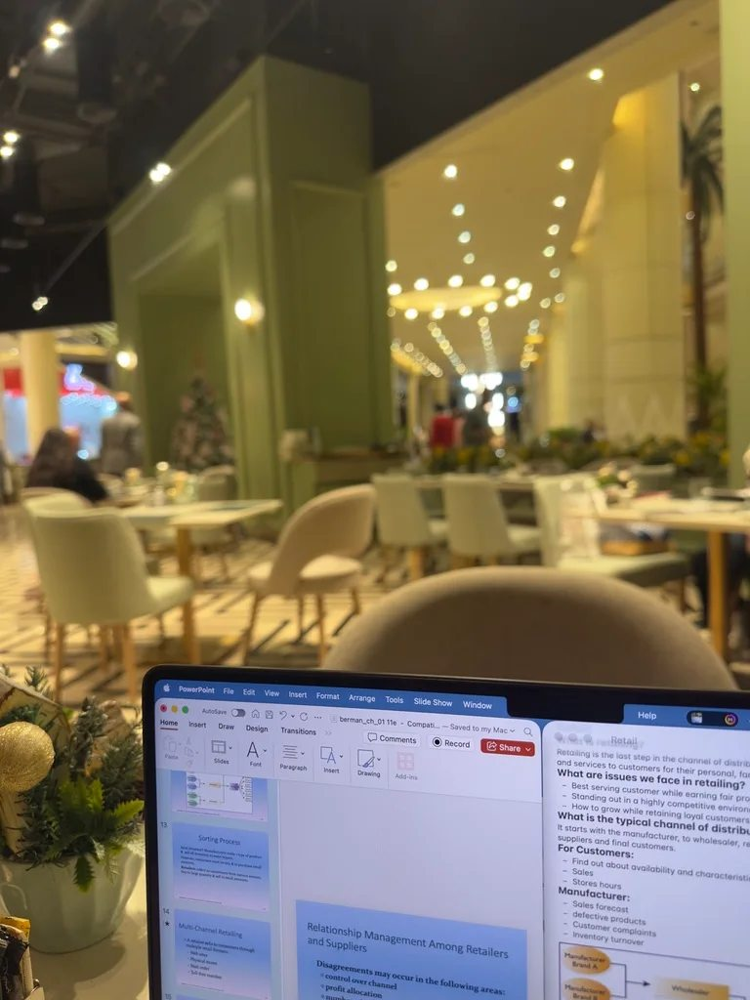
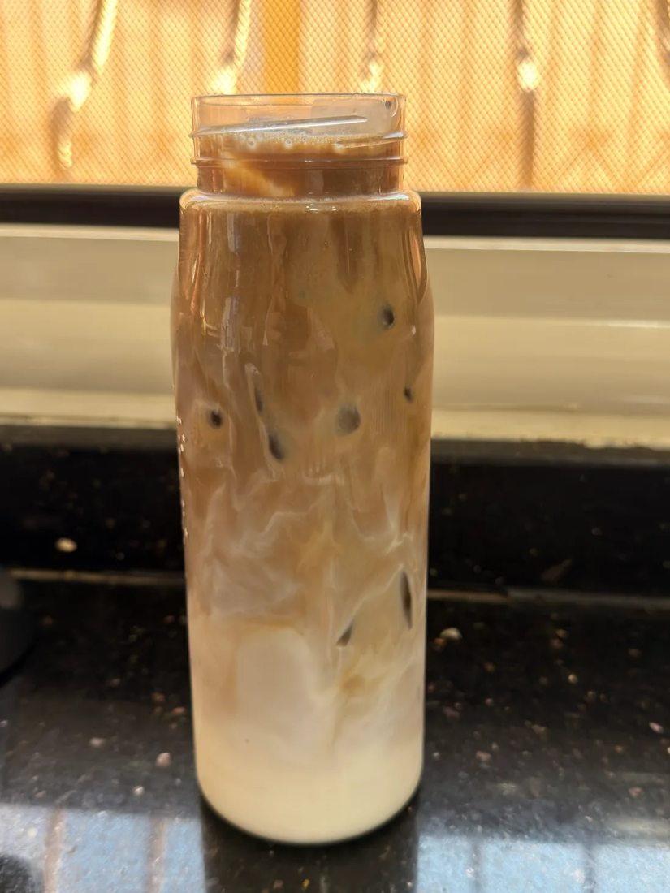
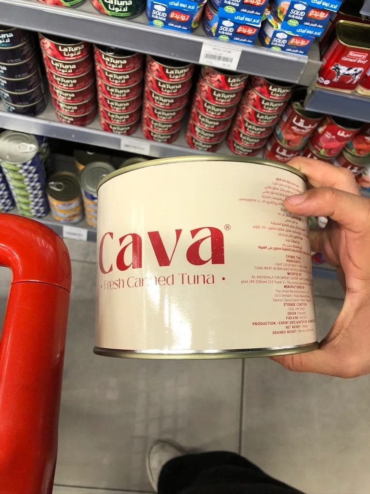
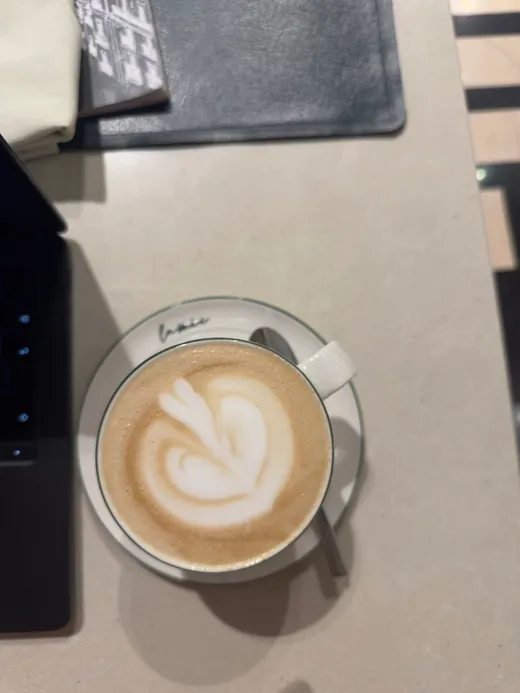
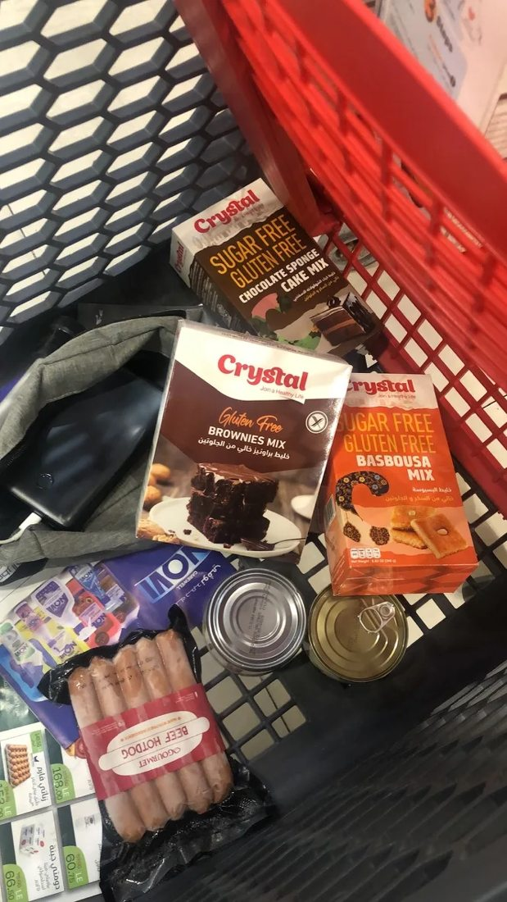
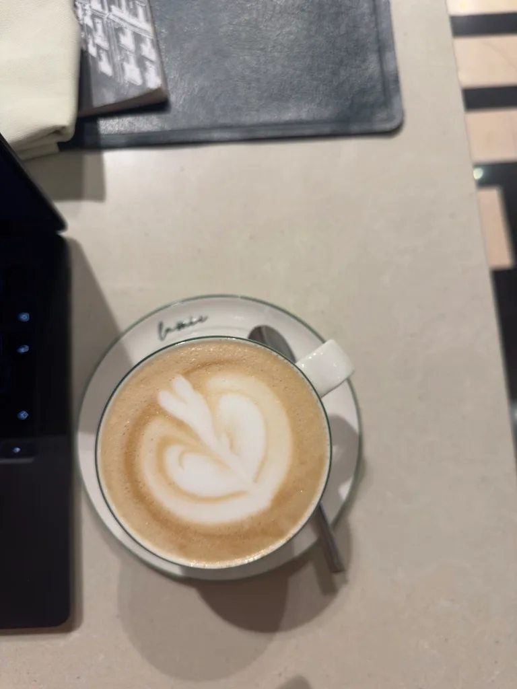

شعرية باللبن
تقيلة لدرجة تاكل بالسكينة.أنا بحب الشعرية باللبن تقيلة وكريمي، والسكر على حسب الذوق. وصفة من مطبخ بودي إيتس.




أهلًا بيك في بودي إيتس
يومية أكل مصرية فيها وصفات من مطبخ بودي، وتجارب مطاعم وكافيهات، وحكايات عن الأكل اللي بنحبه.
دفتر الوصفات
وصفات من مطبخ بودي.
دفتر التجارب
تجارب أكل وكافيهات.
أرشيف الحكايات
حكايات عن الأكل والذكريات.
ركن مخصوص للناس اللي بتحب الأكل.
Mama Approved وBesor3a Map وWhat To Eat From — ومعاهم الدليل والشارات وعضو الشهر.
الترشيحات، والإفيهات، والناس اللي بنحبهم.

المساحة دي مصممة لمجتمع What To Eat، لكنها حاليًا نموذج تجريبي مستقل من بودي إيتس. العضوية الفعلية غير مفعّلة بعد.
Mama Approved
Besor3a Map
جرّب المساحة
الدخول هنا تجريبي فقط، من غير بيانات شخصية أو التحقق من Facebook. اكتب كود المعاينة.
أهلًا بيك في مساحتنا.
تجربة تفاعلية توضح شكل الخصائص جوا موقع بودي إيتس. البيانات أدناه توضيحية فقط.
إيه نفسك تاكل النهارده؟
اختار الخاصية اللي محتاجها. كل ده نموذج تفاعلي من غير استخدام بيانات أعضاء الجروب.




Mama Approved ♡
الإفيه اللي بدأ من بوست 2023 وبقى جزء من حكايات الجروب. هنا هنحوله لاختيارات واضحة المصدر والمعايير.
Mama's Personal Pick
اختيارات مبنية على تجربة فعلية موثقة وموافقة صاحبة الرأي.
بانتظار بيانات حقيقيةCommunity Approved
ترشيحات متكررة من أعضاء اختاروا المشاركة بموافقتهم، مع عرض عدد المساهمات.
بانتظار بيانات حقيقيةجعان؟ قول الأكلة بسرعة.
بحث تفاعلي في 4 سجلات توضيحية فقط. النتائج ليست تصنيفًا لأفضل المطاعم ولا توصيات مستوردة من الجروب.
What To Eat From…?
المرة دي هنبدأ من المكان، مش نوع الأكلة. اختار منطقة وشوف الأمثلة المسجلة.
دليل بودي إيتس للأكل
نموذج تصميمي لنسخة PDF مستقبلية. مفيش دليل رسمي منشور أو بيانات مجتمع مستوردة حاليًا.
دليل الأكل
WHAT TO EAT · CONCEPT EDITIONإيه اللي هيبقى جوا الدليل؟
ترشيحات مصنفة بالمناطق والأكلات والميزانيات، مع تاريخ كل تجربة وروابط المصدر، وصفحات مختارة للمساهمين.
تصدير PDF الفعلي مش متاح في النسخة التجريبية دي؛ ده تصور لشكل العدد.
شارات الأعضاء
تصميم شارة Boudie Eats تجريبية. لا تعني التحقق من عضوية What To Eat ولا تمثل شراكة رسمية.
شارة المجتمع — نموذج
تقدر تنزّل الشارة كملف SVG لتجربة الشكل. مكتوب عليها Preview علشان ما تتفهمش كاعتماد رسمي.
كل شهر، حكاية جديدة.
تقدير للطباخين والمصورين وصنّاع الأكل اللي بيخلوا المجتمع أحلى. النشر الحقيقي لازم يكون بموافقتهم.

ترشيح تجريبيرشّح شخص يستحق الضوء.
الترشيح التجريبي مش بيتبعت لأي سيرفر ومش بيتخزن بعد إغلاق الصفحة.